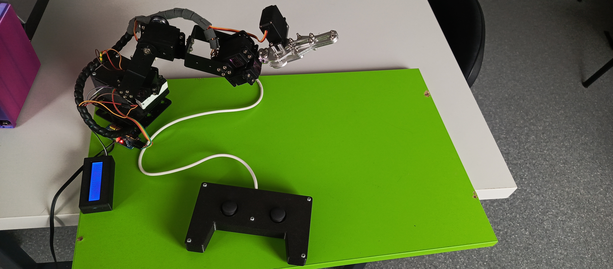

Maturitní práce Patrika Mičiana, obor IT v průmyslu na SŠ Jablunkov. Kovové rameno se šesti servy řízené Arduinem Nano. Ovládá se dvěma joysticky, nebo přímo z tohoto webu. Bez robota si ho můžeš vyzkoušet ve 3D simulaci.

Tento projekt představuje robotické rameno řízené mikrokontrolérem Arduino za použití PWM ovladače PCA9685, displeje a dvousměrových joysticků.
Lze ovládat analogovými joysticky i přímo z tohoto webu přes rozhraní Web Serial.
Displej LCD 16x2 I2C zobrazuje aktuální úhly serv 1 až 5 v reálném čase.
Pozici kleští, ramene a základny ukládá do EEPROM (příkazem p nebo při přepnutí kleští). Po zapnutí se rameno vždy vrací do výchozí pozice.
Stiskem obou tlačítek joysticků zároveň rameno spustí taneční sekvenci, stejným stiskem ji ukončíš.
Na webu je 3D model ramene, který se hýbe podle posuvníků v sekci Ovládání, i bez připojeného robota.
| Komponenta | Popis / Specifikace | Odkaz |
|---|---|---|
| Arduino Nano/Every | Řídicí mikrokontrolér projektu | Koupit (Laskakit) |
| PCA9685 PWM Driver | 16kanálový 12bitový ovladač serv přes I2C | Koupit (Drátek) |
| LCD Displej 16x2 s I2C | Displej se síťovým modulem PCF8574 | Koupit (Laskakit) |
| 2x Analogový Joystick Module | Dvouosé joysticky s tlačítkem (např. KY-023) | Koupit (Drátek) |
| Servomotory (MG996R) | Serva s kovovými převody | Koupit (Drátek) |
| 6 osá Kovová robotická ruka | Konstrukce i se servomotory | Koupit (Laskakit) |
| Knihovna pro PCA9685 | Zde stáhněte knihovnu pro práci s PCA9685 | Stáhnout ZIP |
| Ovladač pro arduino | Zde stáhněte ovladač do pc pro práci s Arduinem | Stáhnout ZIP |
| Ovladač | Zde stáhněte STL soubor ovladače (víko a tělo je zvlášť) | Stáhnout ZIP |
| krabička displeje | Zde stáhněte STL soubor krabičky displeje | Stáhnout ZIP |
| Box Arduina | Zde stáhněte STL soubor boxu pro Arduino (box a víko je zvlášť) | Stáhnout ZIP |
| Servo | Funkce | Výchozí pozice |
|---|---|---|
| S0 | Kleště (joystick: zavřeno 120°, otevřeno 50°) | 130° |
| S1 | Natočení kleští | 100° |
| S2 | Sklon kleští | 150° |
| S3 | Předloktí | 0° |
| S4 | Hlavní rameno | 180° |
| S5 | Otočná základna | 70° |
I2C adresa 0x40, frekvence 50 Hz, pulz 500–2500 µs pro 0–180°. Serva od kanálu 0.
I2C adresa 0x27. Ukazuje úhly S1–S5 a překresluje jen změněné hodnoty. Při přepnutí kleští na 1,5 s „STAV KLESTI“.
2× KY-023, čtení každých 5 ms, mrtvá zóna 440–580, tlačítka s ošetřením zákmitů 250 ms.
| Příkaz | Co udělá |
|---|---|
<servo> <úhel> | Nastaví servo 0–5 na úhel 0–180, např. 3 120. Arduino odpoví „Servo 3 nastaveno na 120“. |
p | Uloží pozice do EEPROM. |
r | Vrátí všechna serva do výchozí pozice. |
Každý příkaz končí novým řádkem. Stejné příkazy posílá webové ovládání níže.
Adafruit_I2CDevice.h: No such file or directory – ve Správci knihoven doinstaluj Adafruit BusIO.Autor: Patrik Mičian, maturitní práce, SŠ Jablunkov, obor IT v průmyslu. Zdrojový kód je na GitHubu.
Tento kód nahrajte do Arduina. Obsahuje podporu pro ovládaní přes Sériovou linku i přes fyzické joysticky.
#include <Wire.h>
#include <Adafruit_PWMServoDriver.h>
#include <LiquidCrystal_I2C.h>
#include <EEPROM.h>
// Inicializace modulů
Adafruit_PWMServoDriver pwm = Adafruit_PWMServoDriver(0x40);
LiquidCrystal_I2C lcd(0x27, 16, 2);
// Rozsahy mikrosekund pro serva (500us až 2500us pro plných 0-180°)
#define USMIN 500
#define USMAX 2500
const int PIN_JOY1_X = A0;
const int PIN_JOY1_Y = A1;
const int PIN_JOY1_SW = 2;
const int PIN_JOY2_X = A2;
const int PIN_JOY2_Y = A3;
const int PIN_JOY2_SW = 4;
const int ADDR_POS0 = 0;
const int ADDR_POS4 = 1;
const int ADDR_POS5 = 2;
int pos0, pos1, pos2, pos3, pos4, pos5;
int oldPos1 = -1, oldPos2 = -1, oldPos3 = -1, oldPos4 = -1, oldPos5 = -1;
unsigned long lastUpdate = 0;
const int speedDelay = 5;
unsigned long lastBtn1Time = 0;
unsigned long lastBtn2Time = 0;
const int debounceDelay = 250;
bool lastButton1State = HIGH;
bool lastButton2State = HIGH;
bool rezimNatoceniKlesti = false;
bool clesteZavreny = true;
// Proměnné pro zobrazení zprávy na LCD
unsigned long casZobrazeniZpravy = 0;
bool zobrazujeZpravu = false;
const int DELKA_ZPRAVY = 1500;
// Převod úhlu na mikrosekundy pro PCA9685
void setServoAngle(uint8_t n, int angle) {
int us = map(angle, 0, 180, USMIN, USMAX);
pwm.writeMicroseconds(n, us);
}
void applyAllServos() {
setServoAngle(0, pos0); // Servo 0 -> Kleště
setServoAngle(1, pos1); // Servo 1 -> Natočení kleští X
setServoAngle(2, pos2); // Servo 2 -> Natočení kleští Y
setServoAngle(3, pos3); // Servo 3 -> Předloktí
setServoAngle(4, pos4); // Servo 4 -> Rameno
setServoAngle(5, pos5); // Servo 5 -> Základna
}
void printValue3Digits(int col, int row, int val) {
lcd.setCursor(col, row);
if (val < 100) lcd.print("0");
if (val < 10) lcd.print("0");
lcd.print(val);
}
void setupDisplayTemplate() {
lcd.clear();
// Radek 0: S1:100 S2:150
lcd.setCursor(0, 0); lcd.print("S1:");
lcd.setCursor(8, 0); lcd.print("S2:");
// Radek 1: S3:000 S4:180 S5:070
lcd.setCursor(0, 1); lcd.print("S3:");
lcd.setCursor(5, 1); lcd.print("S4:");
lcd.setCursor(11, 1); lcd.print("S5:");
// Vynucení překreslení všech hodnot
oldPos1 = -1; oldPos2 = -1; oldPos3 = -1;
oldPos4 = -1; oldPos5 = -1;
}
void zobrazStavKlesti(bool stavZavreno) {
lcd.clear();
lcd.setCursor(0, 0);
lcd.print(" STAV KLESTI ");
lcd.setCursor(0, 1);
if (stavZavreno) {
lcd.print(" KLESTE ZAVRENY");
} else {
lcd.print(" KLESTE OTEVRENY");
}
zobrazujeZpravu = true;
casZobrazeniZpravy = millis();
}
void updateDisplay() {
if (zobrazujeZpravu) {
if (millis() - casZobrazeniZpravy > DELKA_ZPRAVY) {
zobrazujeZpravu = false;
setupDisplayTemplate();
}
return;
}
// Aktualizace hodnot S1 až S5 na displeji pouze při změně
if (pos1 != oldPos1) { printValue3Digits(3, 0, pos1); oldPos1 = pos1; }
if (pos2 != oldPos2) { printValue3Digits(11, 0, pos2); oldPos2 = pos2; }
if (pos3 != oldPos3) { printValue3Digits(3, 1, pos3); oldPos3 = pos3; }
if (pos4 != oldPos4) { printValue3Digits(8, 1, pos4); oldPos4 = pos4; }
if (pos5 != oldPos5) { printValue3Digits(14, 1, pos5); oldPos5 = pos5; }
}
void savePositions() {
EEPROM.update(ADDR_POS0, pos0);
EEPROM.update(ADDR_POS4, pos4);
EEPROM.update(ADDR_POS5, pos5);
Serial.println("Pozice uspesne ulozeny do EEPROM.");
}
void loadPositions() {
pos0 = 130; // Kleště zavřené
pos1 = 100; // Natočení X
pos2 = 150; // Natočení Y
pos3 = 0; // Předloktí
pos4 = 180; // Rameno
pos5 = 70; // Základna
clesteZavreny = true;
}
// --- FUNKCE PRO SPUŠTĚNÍ A BĚH TANCE ---
void zahrajTanec() {
lcd.clear();
lcd.setCursor(0, 0);
lcd.print(" *** TANEC! ***");
lcd.setCursor(0, 1);
lcd.print(" ROBOT TANCI... ");
bool tancuj = true;
auto moveStep = [&](int target0, int target1, int target2, int target3, int target4, int target5, int stepDelay) -> bool {
bool reached = false;
while (!reached) {
if (digitalRead(PIN_JOY1_SW) == LOW && digitalRead(PIN_JOY2_SW) == LOW) {
delay(200);
return false;
}
reached = true;
if (pos0 < target0) { pos0++; reached = false; } else if (pos0 > target0) { pos0--; reached = false; }
if (pos1 < target1) { pos1++; reached = false; } else if (pos1 > target1) { pos1--; reached = false; }
if (pos2 < target2) { pos2++; reached = false; } else if (pos2 > target2) { pos2--; reached = false; }
if (pos3 < target3) { pos3++; reached = false; } else if (pos3 > target3) { pos3--; reached = false; }
if (pos4 < target4) { pos4++; reached = false; } else if (pos4 > target4) { pos4--; reached = false; }
if (pos5 < target5) { pos5++; reached = false; } else if (pos5 > target5) { pos5--; reached = false; }
applyAllServos();
delay(stepDelay);
}
return true;
};
while (tancuj) {
if (!moveStep(60, 90, 90, 130, 140, 90, 6)) break;
if (!moveStep(130, 45, 135, 60, 60, 150, 7)) break;
if (!moveStep(60, 135, 45, 120, 120, 30, 5)) break;
for (int i = 0; i < 4; i++) {
if (!moveStep(130, 40, 140, 110, 90, 90, 4)) { tancuj = false; break; }
if (!moveStep(60, 140, 40, 70, 90, 90, 4)) { tancuj = false; break; }
}
if (!tancuj) break;
if (!moveStep(130, 120, 60, 140, 150, 140, 8)) break;
if (!moveStep(60, 60, 120, 50, 60, 40, 8)) break;
if (!moveStep(60, 90, 90, 130, 120, 90, 6)) break;
for (int i = 0; i < 5; i++) {
if (!moveStep(130, 90, 90, 130, 120, 90, 3)) { tancuj = false; break; }
if (!moveStep(60, 90, 90, 130, 120, 90, 3)) { tancuj = false; break; }
}
if (!tancuj) break;
if (!moveStep(130, 100, 150, 0, 180, 70, 8)) break;
}
setupDisplayTemplate();
}
void setup() {
Serial.begin(9600);
Serial.setTimeout(10);
lcd.init();
lcd.backlight();
pwm.begin();
pwm.setPWMFreq(50);
pinMode(PIN_JOY1_SW, INPUT_PULLUP);
pinMode(PIN_JOY2_SW, INPUT_PULLUP);
loadPositions();
applyAllServos();
setupDisplayTemplate();
Serial.println("Robot pripraven.");
}
void loop() {
if (Serial.available() > 0) {
handleSerial();
}
if (millis() - lastUpdate > speedDelay) {
handleJoysticks();
handleButtons();
applyAllServos();
updateDisplay();
lastUpdate = millis();
}
}
void handleJoysticks() {
int j1X = analogRead(PIN_JOY1_X);
int j1Y = analogRead(PIN_JOY1_Y);
int j2X = analogRead(PIN_JOY2_X);
int j2Y = analogRead(PIN_JOY2_Y);
// LEVÝ JOYSTICK (Joystick 1)
// Osa X: Předloktí (Servo 3)
if (j1X < 440) pos3 = constrain(pos3 - 1, 0, 180);
if (j1X > 580) pos3 = constrain(pos3 + 1, 0, 180);
// Osa Y: Celé rameno nahoru/dolů (Servo 4)
if (j1Y < 440) pos2 = constrain(pos2 - 2, 0, 180);
if (j1Y > 580) pos2 = constrain(pos2 + 2, 0, 180);
// PRAVÝ JOYSTICK (Joystick 2) - Přepínatelný režim
if (!rezimNatoceniKlesti) {
// REŽIM A: Otáčení celého robota (Servo 5)
if (j2X < 440) pos4 = constrain(pos4 - 1, 0, 180);
if (j2X > 580) pos4 = constrain(pos4 + 1, 0, 180);
if (j2Y < 440) pos5 = constrain(pos5 - 1, 0, 180);
if (j2Y > 580) pos5 = constrain(pos5 + 1, 0, 180);
}
else {
// REŽIM B: Ovládání natočení kleští (Servo 1 a Servo 2)
if (j2X < 440) pos1 = constrain(pos1 - 1, 0, 180);
if (j2X > 580) pos1 = constrain(pos1 + 1, 0, 180);
}
}
void handleButtons() {
bool currentBtn1 = digitalRead(PIN_JOY1_SW);
bool currentBtn2 = digitalRead(PIN_JOY2_SW);
// Detekce stisku obou tlačítkek současně (TANEC)
if (currentBtn1 == LOW && currentBtn2 == LOW) {
delay(200);
if (digitalRead(PIN_JOY1_SW) == LOW && digitalRead(PIN_JOY2_SW) == LOW) {
zahrajTanec();
lastButton1State = HIGH;
lastButton2State = HIGH;
return;
}
}
// Levé tlačítko: Otevře/zavře kleště (Servo 0)
if (currentBtn1 == LOW && lastButton1State == HIGH) {
if (millis() - lastBtn1Time > debounceDelay) {
clesteZavreny = !clesteZavreny;
if (clesteZavreny) {
pos0 = 120; // Hodnota pro ZAVŘENO
Serial.println("Kleste: ZAVRENO");
} else {
pos0 = 50; // Hodnota pro OTEVŘENO
Serial.println("Kleste: OTEVRENO");
}
zobrazStavKlesti(clesteZavreny);
savePositions();
lastBtn1Time = millis();
}
}
lastButton1State = currentBtn1;
// Pravé tlačítko: Přepíná režim pravého joysticku
if (currentBtn2 == LOW && lastButton2State == HIGH) {
if (millis() - lastBtn2Time > debounceDelay) {
rezimNatoceniKlesti = !rezimNatoceniKlesti;
if (rezimNatoceniKlesti) {
Serial.println("PRAVY JOYSTICK: Rezim nataceni klesti");
} else {
Serial.println("PRAVY JOYSTICK: Rezim otaceni zakladny");
}
lastBtn2Time = millis();
}
}
lastButton2State = currentBtn2;
}
void handleSerial() {
String input = Serial.readStringUntil('\n');
input.trim();
if (input == "p" || input == "P") { savePositions(); return; }
if (input == "r" || input == "R") {
pos0 = 130; pos1 = 100; pos2 = 150; pos3 = 0; pos4 = 180; pos5 = 70;
rezimNatoceniKlesti = false;
clesteZavreny = true;
applyAllServos();
setupDisplayTemplate();
Serial.println("Reset pozic na vychozi.");
return;
}
int spaceIndex = input.indexOf(' ');
if (spaceIndex != -1) {
int servoNum = input.substring(0, spaceIndex).toInt();
int value = input.substring(spaceIndex + 1).toInt();
if (servoNum >= 0 && servoNum <= 5 && value >= 0 && value <= 180) {
switch (servoNum) {
case 0: pos0 = value; break;
case 1: pos1 = value; break;
case 2: pos2 = value; break;
case 3: pos3 = value; break;
case 4: pos4 = value; break;
case 5: pos5 = value; break;
}
applyAllServos();
updateDisplay();
Serial.print("Servo "); Serial.print(servoNum);
Serial.print(" nastaveno na "); Serial.println(value);
}
}
}
Posuvníky hýbou 3D modelem ramene vždycky. Když připojíš Arduino přes USB a klikneš na Připojit Arduino, hýbe se zároveň i skutečný robot. Model můžeš myší otáčet a kolečkem přibližovat.
Tvůj prohlížeč neumí 3D (WebGL), simulace se nezobrazí. Ovládání funguje dál.